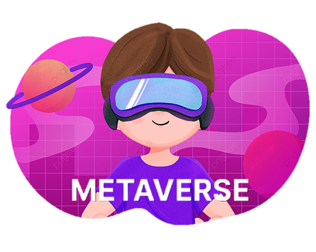
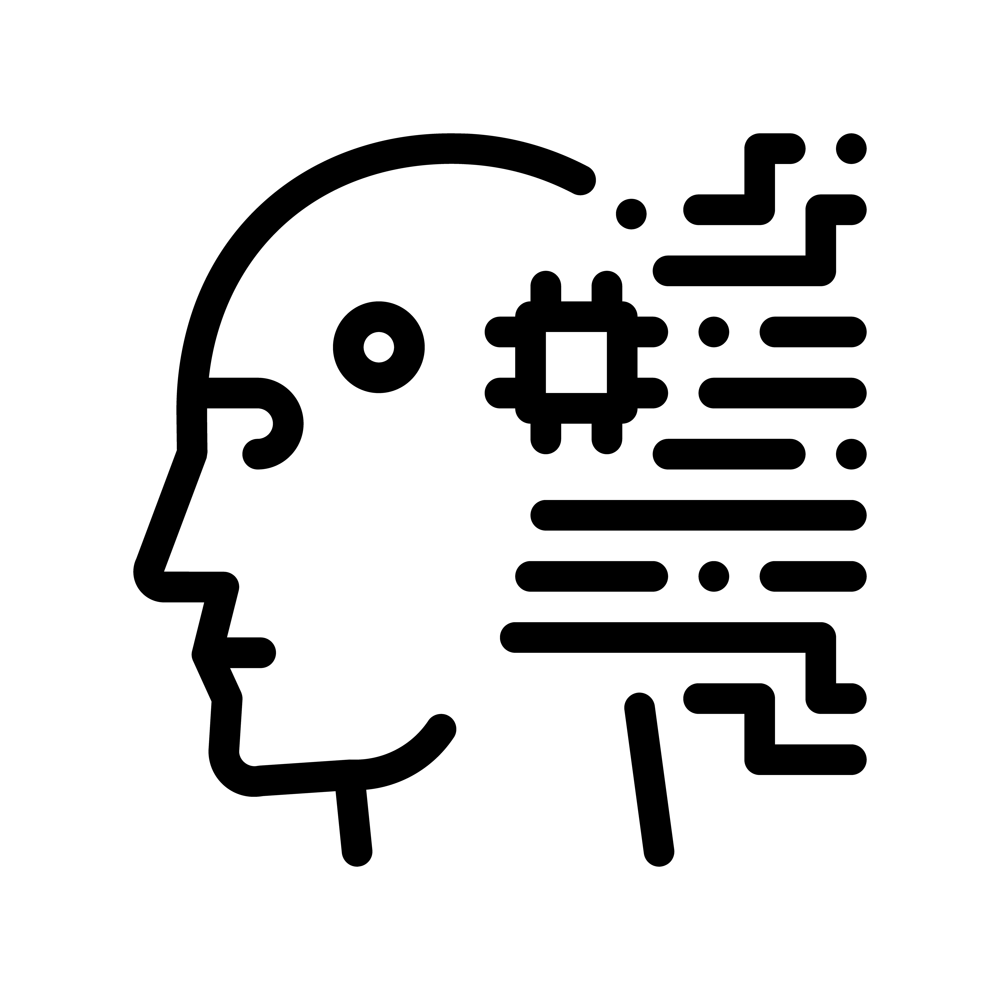

챗GPT가 말하는 2023년 이슈 TOP3
현재까지의 트렌드와 이슈를 바탕으로 가장 가능성 있는 이슈는 기후 변화와 환경 보호, 메타버스와 가상 현실, 인공지능과 빅데이터로 예상된다.
현재까지의 트렌드와 이슈를 바탕으로 가장 가능성 있는 이슈는 기후 변화와 환경 보호, 메타버스와 가상 현실, 인공지능과 빅데이터로 예상된다.
탄소중립 목표 달성을 위한 정책, 지속가능한 발전, 그리고 환경 보호를 위한 혁신적인 기술들이 주요 관심사가 될 것으로 보인다.
타버스는 온라인 가상 공간에서 실생활을 반영하거나 초월하는 경험을 제공하는 기술이다.
인공지능(AI)과 빅데이터는 지속적으로 성장하고 있는 기술로, 다양한 산업 분야에서 혁신과 변화를 가져오고, 이를 통해 새로운 비즈니스 모델, 개인화된 서비스, 그리고 보다 효율적인 의사결정이 가능해질 것이다.
|  |  |